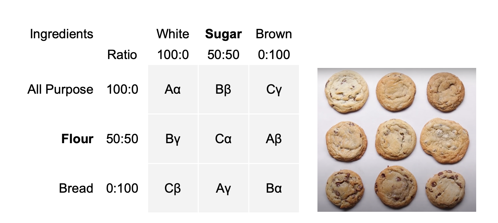
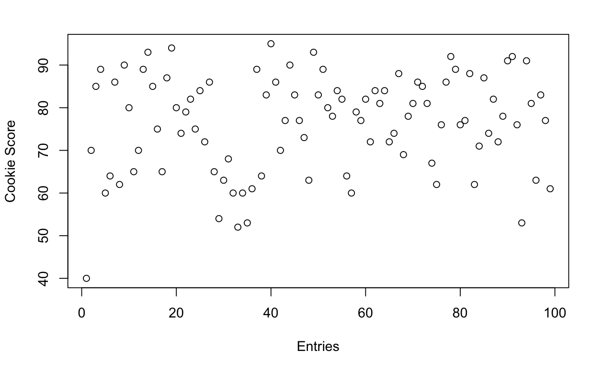
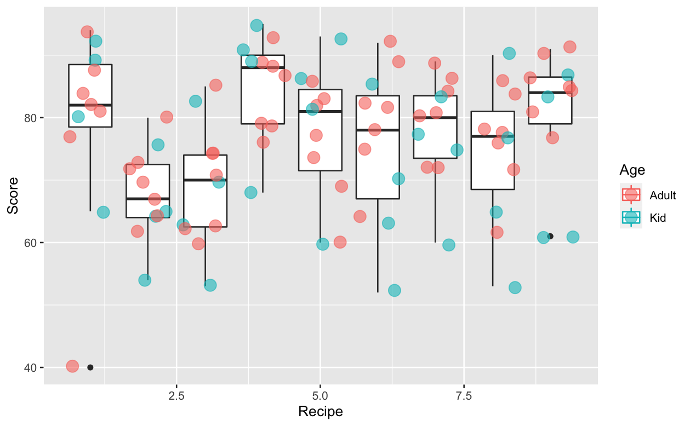
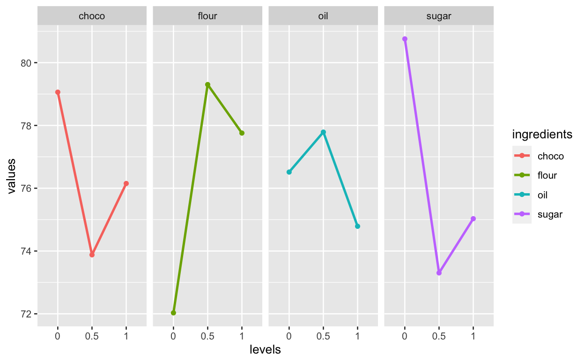
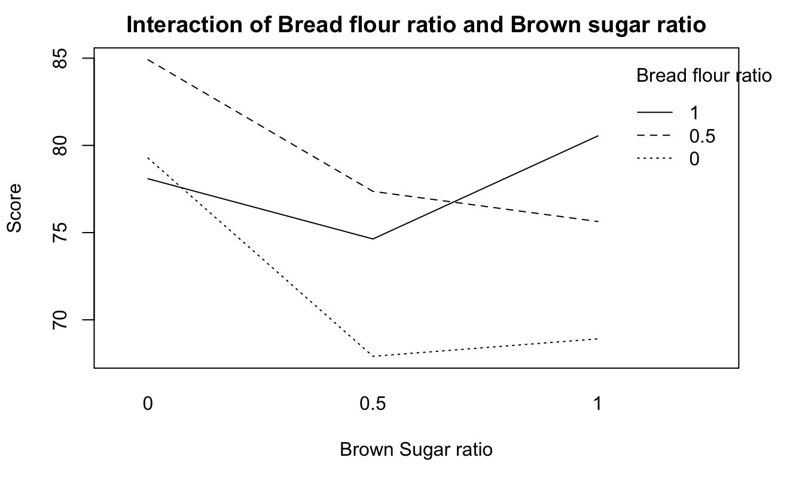

Consumer Studies

More studies to be added ⋅⋅⋅
Social Studies

More studies to be added ⋅⋅⋅
More studies to be added ⋅⋅⋅
More studies to be added ⋅⋅⋅
2020
9 cookie recipes
scored 1-100 by 11 tasters
4 ingredients
3 levels each
2 age groups
7 adults
4 kids
R
Location Dispersion Model
Response Surface Model
Linear Model
Quadratic Model
To find out the best recipe with a limited sample size (as one would imagine how difficult it is to get access to human tasters in the Los Angles county during covid-19 quarantine), my project partner Prakul and I developed and executed an effective experiment design involving 11 tasters, to gather the critical data points that allowed us to map out the main effects of key cookie ingredients. Every taster only needed to take 9 bites and score it 1 to 100 to give us sufficient information about 4 ingredients, each with 3 different levels of ingredient mix.
Chewiness is the main determining factor for adults. Bread flour to all-purpose flour ratio peaked at half/half mix. Sweetness is the biggest likeness factor for kids: the sweeter the better for the 11 to 16 age group. White sugar 100% is the best for kids. And when we have adults and kids together, we see a “tug-war” between the two factors.
This is a classical 3x3 matrix graeco-latin square design, which is a 4 dimensional orthogonal array.
⦿ Column is the 1st dimension: sugar. We have white vs. brown sugar. The three levels are 100% white | 50% white and 50% brown | 100% brown sugar.
⦿ Row is the 2nd dimension: flour. We have all-purpose vs. bread flour. The same 1:0 | 0.5:0.5 | 0:1 three levels.
⦿ Latin letter is the 3rd dimension: fat - butter vs. coconut oil.
⦿ Greek letter is the 4th dimension: chocolate - chips vs. chunks.
Design execution is fundamental to the success of the experiment involving individuals tasting cookies. A million things can go wrong and get us unreliable data. Prakul and I worked out all the details to block the two operations with the same ingredients from the same brand, the same baking procedure and equipment, the same tasting activity with a baseline cookie first as score 70 and tasters eyes closed. And we randomized the baking, labeling and tasting procedure so that what cookie tasting sequence won’t skew our results.
99 data points came from 11 tasters, each giving 9 scores over the 9 recipes.
Here’s how the data grouped per recipe look and color coded into adult and kid.
Here’s the Main Effects of the four ingredients, showing how tasters score on each level of the four ingredients.
After running on response surface model on full-factorial with two dominant factors: flour and sugar, we look at how the two factors interact for all age groups.
We built several models and came to below bivariate quadratic model which can be visualized into contour plot, which tells the story of the sugar x flour “tug war”. Depending on the adult-kid ratio in our sampling, we see a “sweet spot” where the highest score at 100% white sugar and 50/50 all-purpose and bread flour ratio.

Our perfect chocolate chip cookie recipe is tested to satisfy everyone.